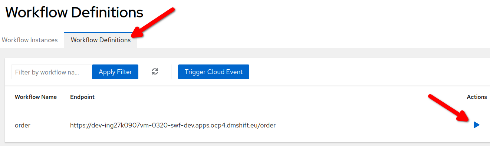

Startup project
This section shows how to create a simple Serverless Workflow using Serverless Logic Web Tools.
A basic workflow
-
Open the Serverless Logic Web Tools in your browser.
-
Select
YAMLbutton in the Create pane -
Change the workflow name with
order -
Click the text
Create a Serverless Workflowand selectServerless Workflow Example: a simple template is generated.
The workflow editor is split in two panes: the text editor and the visual representation of the workflow.
At the moment there is no way to graphically edit the workflow, the user can edit the yaml file on the left side and see the diagram changes on the right. When the user clicks on a node of the graph, the cursor in the text editor is moved to the corresponding section of the yaml definition.
Change the template to match the following:
id: order
version: "1.0"
specVersion: "0.8"
name: Order Workflow
description: Order Workflow Sample
functions:
- name: printMessage
type: custom
operation: sysout
start: Order Received
states:
- name: Order Received
type: operation
actions:
- name: printAction
functionRef:
refName: printMessage
arguments:
message: '"Order received: " + .orderId'
end: trueLet’s analyze the content:
-
At the beginning there are some identification details: the unique
id,version,name,descriptionand thespecVersion. -
The
startattribute point to the first state in the flowOrder Received. -
functionsare a set of reusable definitions for service invocations or expression evaluation. In this example, printMessage is a custom function which print a message in the log. -
statescontains a set of states which are the building block of the workflow logic.
The workflow logic is pretty straightforward: when the workflow starts the Order Received state is executed then it ends. However, there are some other aspects:
-
The workflow is started with an input message that is copied in the internal workflow state.
-
The
Order Receivedstate invokes theprintMessagefunction: it’s worth noticing that.orderIdis a jq expression to read the workflow state. In other word, it expect to findorderIdin the workflow state.
To learn more about Serverless Workflow notation and semantic don’t hesitate to read the official specification document which is really clear and accessible: https://github.com/serverlessworkflow/specification/blob/0.8.x/specification.md
Run the workflow
You can easily run your first workflow in your OpenShift environment:
-
Locate the
Try on OpenShiftbutton at the top right of the page and select it. -
Select
Setup… -
In the OpenShift setting page select
Add connectionbutton -
Fill in the OpenShift connection details:
-
Namespace (project): Use the namespace provided by the proctor (if you are running this tutorial on your own, create a new namespace and use it)
-
To retrieve the values for Host and Token:
-
Open the OpenShift console in a different browser window.
-
In the top right corner select the username and the
Copy login commandentry. -
After the login process, select
Dysplay tokenlink to get a command line that resemble the following:oc login --token=sha256~VPMhRtYqHghxlRLWD5X92lg3ZIxr0V7dYYcP5DWxJq4 --server=https://api.ocp4.dmshift.eu:6443 -
Copy the string after
--tokeninto the Token field in the other browser window. -
Likewise, copy the string after
--serverinto the Host field in the other browser window. -
Finally, select the
Connectbutton, you should see the following confirmation message:
-
-
Now that the OpenShift connection is up, you need to reopen the workflow:
-
Go back on the main page clicking on the top banner:
-
From the left navigation menu select
Recent Models. -
Select
orderto open again the workflow designer. -
Select again
Try on OpenShiftbutton and thenUpload "order" to Dev Mode.
-
Wait for the confirmation message and select
Go to Serverless Workflow Dev UI ↗to open the Dev UI in a new browser tab.
From Dev UI you can trigger a new workflow instance and inspect its execution:
-
Select
Workflow Definitions -
Click on the arrow button in corresponding to the
orderrow.
-
Fill in the
Start Workflow Dataedit box with the following JSON payload:{"orderId":"order-123"} -
Select the
Startbutton below.
You should get a confirmation message stating that your workflow instance was triggered.
CONGRATULATION!!! Your first Serverless Workflow was executed as expected!
Inspect the workflow execution
To inspect the workflow execution just triggered select Go to workflow list at the bottom of the confirmation message.
In the Workflow Instances page, select the first instance in the list:
In this Workflow Details page, you can inspect all the details of the workflow execution from the following boxes:
-
Diagram: the serverless workflow diagram is shown, with completed nodes colored green.
-
Timeline: the main workflow tasks, listed in order of execution.
-
Details: the workflow instance metadata.
-
Variables: the internal state of the workflow instance.
Finally, have a look at the Monitoring page charts on your own!